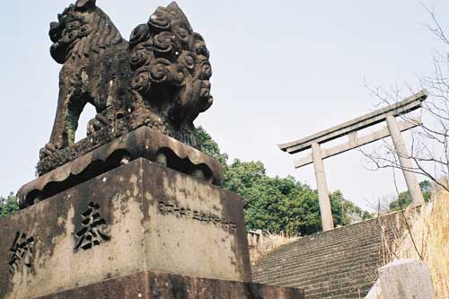
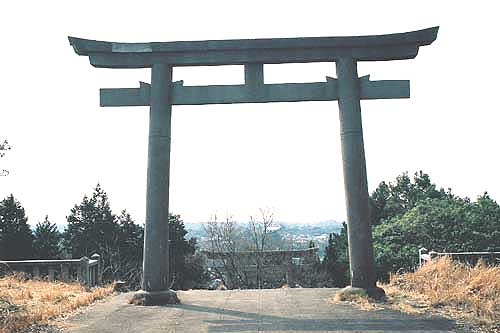
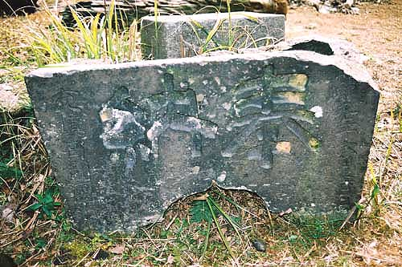

勝立大山祇神社
福岡県大牟田市新勝立町（2001年3月撮影）
瀬戸内海に浮かぶ愛媛県大三島町に鎮座する大山祇神社が、全国山祇神社の総本社であり、 大山祇神の本拠地となっている。大山祇（オオヤマズミ）神は「おおいなる、やまにすむ神」であり、勝立社宅の中にあ った勝立大山祇神社は、通称"山の神神社"として、炭鉱で働く者に敬われていた。
しかし、炭鉱が閉山になった今訪れる者もほとんどなくこの山の神神社も廃虚となっている。

昭和16年5月24日奉納


昭和9年6月吉日奉納
BACK